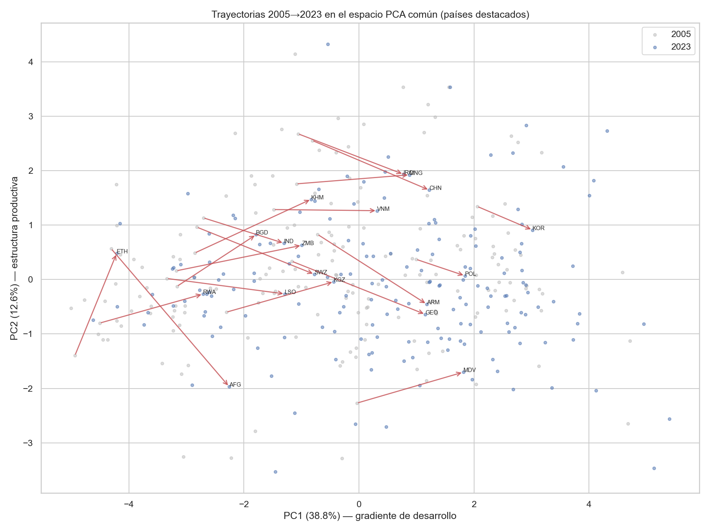
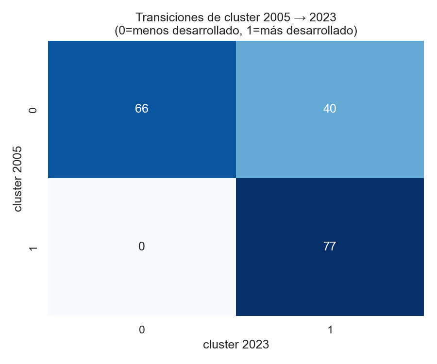
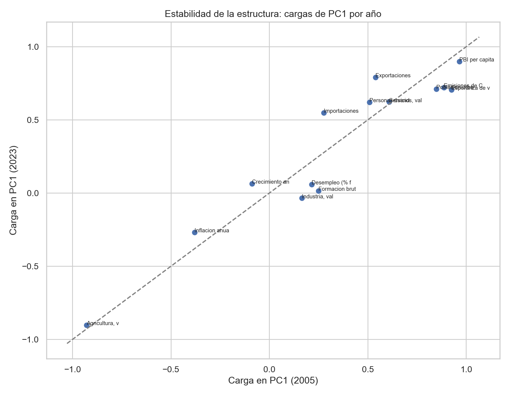

Patrones de desarrollo de los países: PCA y clustering sobre indicadores del Banco Mundial
Trabajo Práctico Final — Análisis Multivariado y Descubrimiento de Patrones
⚠️ BORRADOR generado automáticamente. Pensado para que los integrantes lo editen, validen y completen (carátula, nombres, redacción final). Todas las cifras y figuras provienen de correr
src/run_all.py. Revisar interpretaciones antes de la entrega.
Carátula
- Materia: Análisis Multivariado y Descubrimiento de Patrones
- Carrera: Licenciatura en Ciencia de Datos — Universidad Austral
- Trabajo: Práctico Final — PCA + Análisis de Clustering
- Integrantes: [completar]
- Fecha: [completar]
- Dataset: World Development Indicators (Banco Mundial), corte 2021 con comparación a 2005.
1. Introducción
1.1 Problema y objetivo
¿Es posible resumir el desarrollo socioeconómico de los países con unos pocos ejes interpretables, y agruparlos en perfiles de desarrollo a partir de datos objetivos? El interés práctico es doble: (i) entender qué dimensiones estructuran las diferencias entre países y (ii) ver si surgen grupos coherentes y cómo se movieron los países en ~16 años.
Aplicamos dos técnicas multivariadas complementarias:
- Análisis de Componentes Principales (PCA): reduce las variables correlacionadas a componentes ortogonales que capturan la mayor variabilidad, para interpretar las dimensiones del desarrollo.
- Análisis de Clustering: agrupa países por similitud para descubrir perfiles.
Elegimos PCA (y no Análisis de Correspondencias) porque los datos son mayormente numéricos. Las variables categóricas (región y nivel de ingreso del Banco Mundial) se usan de forma suplementaria/ilustrativa (no construyen los componentes).
1.2 Datos
- Fuente: World Development Indicators (WDI,
source=2), API pública del Banco Mundial. Se guardó un snapshot crudo y todo el análisis trabaja desde él (reproducibilidad). - Unidad de análisis: país (corte transversal anual). Se filtran las agregaciones (World, Euro area, grupos de ingreso) quedando 217 países reales.
- Años: 2021 (moderno) y 2005 (temprano de referencia). 2005 se eligió como el año más temprano (≥2000) con cobertura adecuada en todas las variables (ver §1.3 y
decisiones_metodologicas.md). - Tamaño: ≈194 países × 2 años ≪ 10.000 observaciones. ✔
- 14 variables numéricas (≥5 ✔) + 2 categóricas.
| Dimensión | Variables numéricas (WDI) |
|---|---|
| Ingreso / nivel | PBI per cápita (US$ const. 2015) |
| Macro | Crecimiento del PBI, inflación, desempleo |
| Inversión / comercio | Formación bruta de capital, exportaciones, importaciones (% PBI) |
| Estructura productiva | Agricultura, industria, servicios (valor agregado, % PBI) |
| Social / desarrollo | Población urbana (%), esperanza de vida, uso de Internet (%) |
| Ambiental | Emisiones de CO₂ per cápita |
Categóricas (suplementarias): región y nivel de ingreso del Banco Mundial.
1.3 Decisiones de datos (resumen)
- Se descartaron Gini (cobertura 0,26–0,40), gasto en educación (incomparable en el tiempo) e INB-PPA (redundante con PBI pc y de baja cobertura en 2005).
- Faltantes tras filtros ≤ 15% por variable → imputación KNN por año.
- Países finales: 192 (2005), 194 (2021), panel común = 186.
(El detalle y la justificación estadística de cada decisión están en reports/decisiones_metodologicas.md.)
2. Desarrollo
2.1 Análisis univariado y bivariado
Univariado y transformaciones
Antes de transformar se examinó la distribución y asimetría de cada variable (Figura 1). Varias presentan fuerte asimetría a derecha y varios órdenes de magnitud (PBI per cápita, CO₂), otras tienen valores negativos (inflación, crecimiento), y otras están acotadas en [0,100] (participaciones sectoriales, urbano, Internet).

Decisión variable por variable (ver tabla en decisiones_metodologicas.md §5): log para PBI pc, log1p para CO₂, Yeo-Johnson (admite negativos) para inflación, desempleo, exportaciones, importaciones, agricultura e industria; y sin transformar las de baja asimetría o saturantes. El orden es transformar → estandarizar. Tras transformar, la asimetría queda en |skew| < 0,6 en casi todas.
Bivariado
La matriz de correlación (Figura 2) muestra un bloque de desarrollo fuertemente correlacionado (PBI pc, esperanza de vida, urbanización, Internet, CO₂; agricultura con signo opuesto) y correlaciones esperables entre exportaciones e importaciones. Esta estructura de correlación es justamente lo que el PCA aprovechará.

Las variables clave por nivel de ingreso (categórica) ordenan monótonamente los grupos (Figura 3): a mayor ingreso, mayor PBI pc, esperanza de vida e Internet, y menor peso de la agricultura. Esto anticipa que el primer eje del PCA capturará un gradiente de desarrollo.


2.2 Técnica 1 — Análisis de Componentes Principales (PCA)
Supuestos y preparación
PCA sobre la matriz de correlación (variables estandarizadas: las escalas son incomparables —dólares, %, años, toneladas—). Sin estandarizar, el PBI pc dominaría artificialmente.
¿Cuántos componentes retener?
No usamos un único criterio. El análisis paralelo de Horn (estándar de oro: compara los autovalores reales contra los de datos aleatorios de la misma dimensión) retiene 3 componentes; Kaiser sugiere 4 y el 80% de varianza, 6 (Figura 5). Los criterios convergen en 3–4; adoptamos 3 para la interpretación (64,4% de la varianza).

Distinguimos explícitamente: 3 componentes para analizar/clusterizar (Horn) y 2 componentes solo para visualizar (los gráficos PC1–PC2). No se mezclan.
Interpretación de los ejes (en términos del problema)
Cargas como correlación variable–componente:
- PC1 (41,6%) — gradiente de desarrollo. Positivo: PBI pc (0,94), Internet (0,90), esperanza de vida (0,86), CO₂ (0,80), urbanización (0,76), servicios (0,66). Negativo: agricultura (−0,90). Es el eje “país rico, urbano, conectado y de servicios” vs “país agrario y de menor ingreso”.
- PC2 (12,9%) — estructura productiva. Positivo: industria (0,86), formación de capital (0,46). Negativo: servicios (−0,62), desempleo (−0,44). Separa economías industriales/extractivas de economías de servicios, con independencia del nivel de desarrollo.
- PC3 (9,8%) — apertura comercial / estabilidad macro. Positivo: importaciones (0,63), exportaciones (0,49). Negativo: inflación (−0,50).
El círculo de correlaciones (Figura 6) y el biplot coloreado por nivel de ingreso (Figura 7) confirman la lectura: PC1 separa nítidamente los niveles de ingreso del Banco Mundial (validación con la categórica ilustrativa).


2.3 Técnica 2 — Análisis de Clustering
¿Clusterizar sobre las variables o sobre los componentes?
Con ~14 variables no estamos en alta dimensión. Clusterizar sobre todas las variables estandarizadas es honesto y evita el riesgo del tandem analysis (reducir a pocos componentes antes de clusterizar puede descartar estructura de grupos, ya que PCA maximiza varianza y no separación). Por eso:
- Partición principal: k-means sobre las 14 variables completas.
- Comparación: k-means sobre los 3 componentes de Horn, midiendo el acuerdo (ARI).
Resultado clave: ARI(14 vars vs 3 PCs) = 0,979 en k=2 — las particiones son casi idénticas. Aquí la estructura de grupos sí vive en los componentes de alta varianza, de modo que el PCA no sesga la partición; pero esto se demostró, no se asumió. (El silhouette sube de 0,264 con 14 variables a 0,394 con 3 PCs: el PCA “limpia” ruido y la separación se ve mejor, aunque la partición es la misma.)
Algoritmos, selección de k y estabilidad
Usamos k-means y Ward (jerárquico). El número de clusters se decide por consenso de métricas (Figura 8) + estabilidad bootstrap (criterio de Hennig):
| Criterio | Indica |
|---|---|
| Silhouette, Calinski-Harabasz, Davies-Bouldin | k = 2 |
| Gap statistic | k = 3 (gap monótono creciente → estructura tipo continuo) |
| Estabilidad (Jaccard) | k=2: 0,96/0,97 (muy estable); k=3: 0,77–0,90 (estable); k=4: 0,44 (se disuelve) |
| ARI k-means vs Ward | 0,785 (k=2); 0,493 (k=3) |


Decisión: k = 2 como partición principal (la más robusta, estable y concordante entre algoritmos), con k = 3 como vista complementaria (estable, respaldada por gap; recupera un gradiente bajo/emergente/desarrollado).

Supuestos de k-means y alternativas
k-means asume clusters esféricos de tamaño similar. Probamos alternativas: GMM (elípticos) coincide moderadamente con k-means (ARI 0,628), y HDBSCAN (densidad) marca 71,6% de los países como ruido con solo 2 núcleos densos. Esto es evidencia honesta de que el desarrollo es un continuo (el gradiente PC1) más que grumos densos naturales: el clustering provee una macro-separación, no una taxonomía fina. Por eso el silhouette es moderado.
Perfil de los clusters (k=2, en términos del problema)

| Variable (mediana) | Cluster 0 — en desarrollo (75 países) | Cluster 1 — desarrollado (119) |
|---|---|---|
| PBI per cápita (US$ 2015) | 1.444 | 15.395 |
| Esperanza de vida (años) | 64,9 | 74,9 |
| Población urbana (%) | 40,7 | 73,4 |
| Uso de Internet (%) | 36,7 | 84,4 |
| Agricultura (% PBI) | 19,7 | 3,3 |
| CO₂ per cápita (t) | 0,6 | 4,6 |
| Exportaciones (% PBI) | 21,4 | 42,6 |
El cluster 0 reúne economías de menor ingreso, más agrarias, menos urbanas y conectadas; el cluster 1, economías de mayor ingreso, urbanas, de servicios y más integradas al comercio.
Validación con las categóricas (suplementarias)
La tabla cruzada cluster × nivel de ingreso da χ² = 135,8 (p ≈ 2·10⁻²⁸) en k=2 y χ² = 214,6 (p ≈ 5·10⁻⁴²) en k=3: los clusters coinciden fuertemente con la clasificación oficial de ingreso del Banco Mundial. Las excepciones son informativas:
- Ingreso medio-alto pero perfil “en desarrollo” (cluster 0): Indonesia, Guatemala, Paraguay, Fiji, Moldova y varias islas del Pacífico — economías más agrarias / menos urbanizadas de lo que sugiere su ingreso.
- Ingreso medio-bajo pero perfil “desarrollado” (cluster 1): Vietnam, Marruecos, Túnez, Jordania, Líbano — más urbanizadas/conectadas/de servicios que su par de ingreso.
2.4 Comparación temporal 2005 vs 2021
Para comparar correctamente, ambos años viven en un espacio común: se apilan los dos años, se deciden las transformaciones sobre la distribución combinada y se ajustan un scaler y un PCA sobre los datos combinados (imputación siempre por año). No se ajusta un PCA por año para comparar coordenadas (sería inválido). El modelo común reproduce el análisis principal de 2021 (ARI 0,959).
Trayectorias (Figura 12). El movimiento medio en PC1 es +0,83: casi todos los países avanzaron en el gradiente de desarrollo (progreso global en esperanza de vida, conectividad y urbanización). Mayores avances: Ruanda, Vietnam, China, Camboya, Turquía, Maldivas; retrocesos: Sudán, Venezuela, Siria (conflicto/crisis).

Transiciones de cluster (Figura 13). 28 países “graduaron” de menos a más desarrollado (Albania, Brasil, China, Georgia, Rumania, Turquía, Vietnam, …) y solo Venezuela retrocedió.

Estabilidad de la estructura (Figura 14). La congruencia de Tucker de las cargas de PC1 entre 2005 y 2021 es 0,946: el gradiente de desarrollo es el mismo eje a ~16 años. La agricultura (−0,90) es el marcador más estable; exportaciones e importaciones ganaron peso (mayor integración comercial); formación de capital e industria perdieron peso. El crecimiento del PBI cambió de signo, atribuible a la idiosincrasia del rebote post-COVID de 2021 (a interpretar con cautela).

2.5 Análisis de sensibilidad
Las conclusiones son robustas a las decisiones metodológicas (ARI de la partición k=2 vs línea base = Standard + KNN + 14 vars):
| Variante | ARI vs base | Corr. cargas PC1 |
|---|---|---|
| Imputación MICE | 0,979 | 1,000 |
| Casos completos (sin imputar) | 0,972 | 0,997 |
| RobustScaler | 0,822 | 0,953 |
| Clustering sobre 2 / 3 / 5 PCs | 0,979 / 0,979 / 1,000 | 1,000 |
| Sin 10 outliers (re-export hubs, petro-estados, conflictos) | 0,957 | 0,999 |
Ni la imputación, ni el escalado, ni los outliers, ni la cantidad de componentes dirigen los resultados.
3. Conclusiones
- El desarrollo de los países se resume bien en un eje dominante (PC1, 42% de la varianza): un gradiente de desarrollo (ingreso, salud, urbanización, conectividad vs peso agrario). Un segundo eje captura la estructura productiva (industria vs servicios) y un tercero la apertura/estabilidad macro.
- El clustering revela una macro-separación robusta en dos grupos (desarrollado / en desarrollo), muy alineada con la clasificación de ingreso del Banco Mundial pero con excepciones informativas. No es una taxonomía fina: el desarrollo es esencialmente un continuo (silhouette moderado; HDBSCAN ve un continuo).
- Entre 2005 y 2021 casi todos los países avanzaron en el gradiente; 28 graduaron de grupo y solo Venezuela retrocedió. La estructura del desarrollo es muy estable (congruencia de PC1 = 0,95).
- Metodológicamente: clusterizar sobre las variables completas y comparar contra los componentes evita el sesgo del tandem analysis; aquí ambos coinciden (ARI 0,98), pero se demostró en vez de asumirse.
Limitaciones
- Corte transversal: sin inferencia causal.
- El clustering es una macro-separación, no una tipología fina (lo decimos explícitamente).
- Imputación (≤15%) y outliers: la sensibilidad muestra que no afectan las conclusiones.
- Cambios de definición/cobertura de WDI (p. ej. la serie de CO₂): documentados.
Apéndice (opcional)
- A1. Cobertura por variable y año (
data/processed/cobertura_por_anio.csv). - A2. Asimetría antes/después de transformar (
skewness_antes_despues.csv). - A3. Autovalores y cargas completas del PCA (
pca_autovalores_2021.csv,pca_loadings_2021.csv). - A4. Métricas de selección de k, estabilidad y perfilado completo (
clustering_resultados_2021.json,perfil_medianas_k*_2021.csv). - A5. Trayectorias y transiciones (
trayectorias.csv,transiciones_cluster.csv). - A6. Tabla de sensibilidad (
sensibilidad.csv). - A7. Registro completo de decisiones (
reports/decisiones_metodologicas.md).